Text Classification using GPT-2
George Mihaila
PhD Candidate Computer Science University of North Texas
Disclaimer
- This is not your average tutorial on GPT-2! I will not focus on the original purpose of GPT-2 - text generation.
- In this tutorial we'll use GPT-2 in a less conventional way - for text classification.
Agenda
- Intro
- Understanding Natural Language Processing
- Word embeddings
- Text Classification
- The Transformer
- GPT-2
- Architecture
- Inner Workings
- Prediction
- Classification
- Coding Session
- Conclusions
Intro
Wikipedia
Natural language processing (NLP) is a subfield of linguistics, computer science, and artificial intelligence concerned with the interactions between computers and human language …
… The result is a computer capable of "understanding" the contents of documents, including the contextual nuances of the language within them.
Understanding Natural Language Processing
Understanding Natural Language Processing
example = "I love cats! Cats are very funny."
Understanding Natural Language Processing
example = "I love cats! Cats are very funny."
vocabulary = ['i', 'love', 'cats', 'are', 'funny']
Understanding Natural Language Processing
example = "I love cats! Cats are very funny."
vocabulary = ['i', 'love', 'cats', 'are', 'funny']
word_id = {'i': 0, 'love': 1, 'cats': 2, 'are': 3, 'funny': 4}
Understanding Natural Language Processing
example = "I love cats! Cats are very funny."
vocabulary = ['i', 'love', 'cats', 'are', 'funny']
word_id = {'i': 0, 'love': 1, 'cats': 2, 'are': 3, 'funny': 4}
Encode text into numbers.
Word embeddings

Word embeddings
- Use numbers to represent words:
'love' : 1 'cats' : 2 'funny': 4
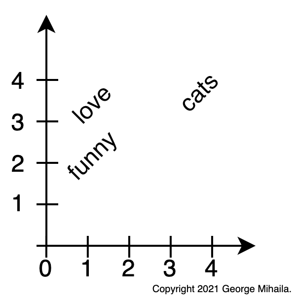
Word embeddings
-
Use numbers to represent words:
'love' : 1 'cats' : 2 'funny': 4 -
User vectors instead of numbers
'love' : [0.90, 3.10]
'cats' : [3.40, 3.20]
'funny': [0.45, 1.88]
Word embeddings
-
Use numbers to represent words:
'love' : 1 'cats' : 2 'funny': 4 -
User vectors instead of numbers
'love' : [0.90, 3.10] 'cats' : [3.40, 3.20] 'funny': [0.45, 1.88] -
Word embeddings are a type of word representation that allows words with similar meaning to have a similar representation.
Text Classification
- Is the task of assigning a set of predefined categories to text data.
- Text classifiers can be used to organize, structure, and categorize any kind of text: documents, medical studies …
- For example:
- new articles can be organized by topics;
- support tickets can be organized by urgency;
- movie reviews can be organized by sentiment;
Text Classification
Movie reviews sentiment classification
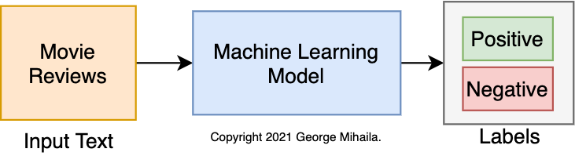
The Transformer
- Is a deep neural network architecture for transforming one sequence into another one with the help of two parts (Encoder and Decoder).
- Was first introduced by Google in 2017 in the paper Attention Is All You Need.
- Is based solely on attention mechanisms.
- It brought "the biggest leap forward in the past five years, and one of the biggest leaps forward in the history of Search." for Google.
The Transformer
- Is a deep neural network architecture for transforming one sequence into another one with the help of two parts (Encoder and Decoder).
- It can transform an article to a summary or translate english to another language, etc.

The Transformer
- Is based solely on attention mechanisms.
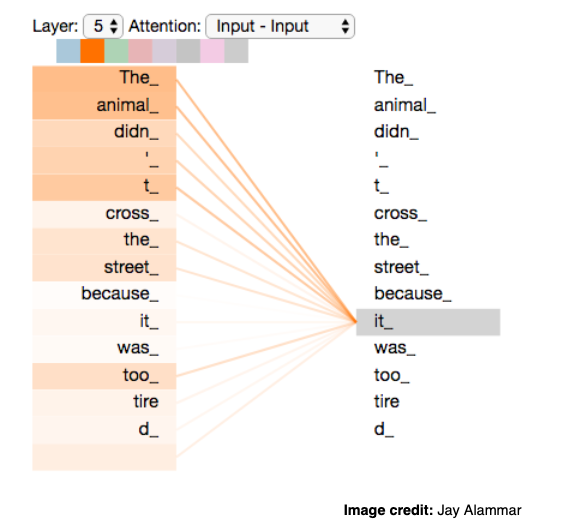
- Disclaimer:
- I will not cover attention since this is not the intent of this tutorial.
- The Illustrated Transformer by Jay Alammar is great resource!
GPT-2
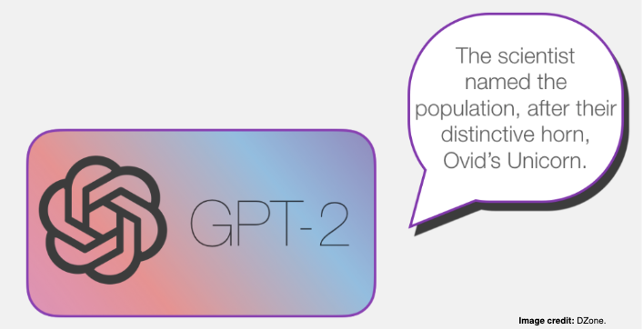
GPT-2
Wikipedia
Generative Pre-trained Transformer 2 (GPT-2) is an open-source artificial intelligence created by OpenAI in February 2019. GPT-2 translates text, answers questions, summarizes passages, and generates text output on a level that, while sometimes indistinguishable from that of humans, can become repetitive or nonsensical when generating long passages.
Architecture
Architecture
- We only have the decoder side of Transformer:
 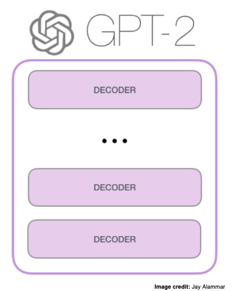
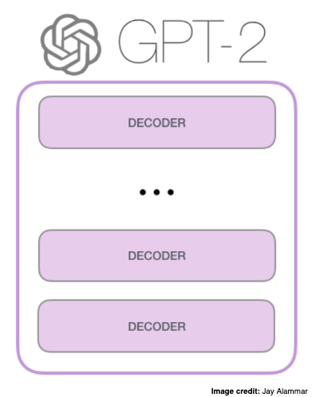
Architecture
- There are multiple variations of GPT-2 depending on the number of decoder blocks:
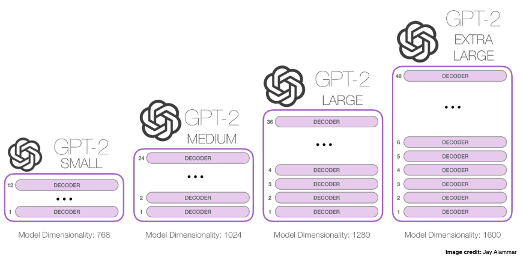
Inner Workings
Prediction
Wikipedia
GPT-2 translates text, answers questions, summarizes passages, and generates text output…
Let's see how it make predictions.
Prediction
- We pass the text "a robot must" to GPT-2.
- GPT-2 will output word embeddings for each of the words.
- The last word embedding is used to predict the next word "obey".
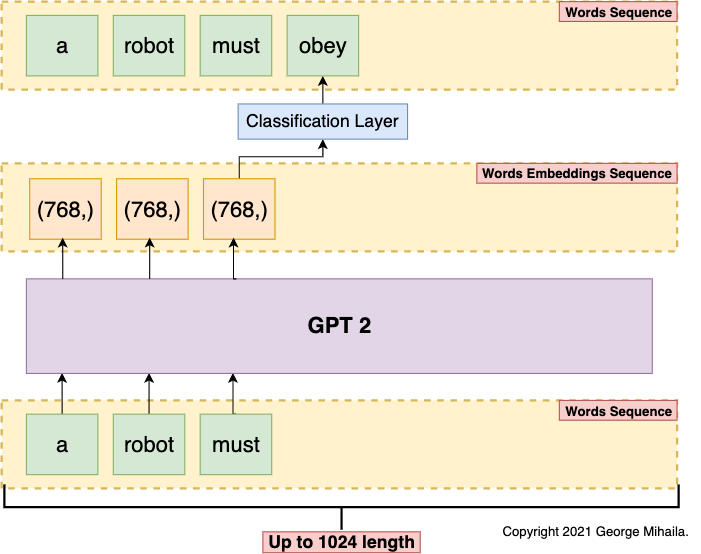
Prediction
- Our new text "a robot must obey" is fed to GPT-2.
- Same process is repeated to predict the next word "orders".
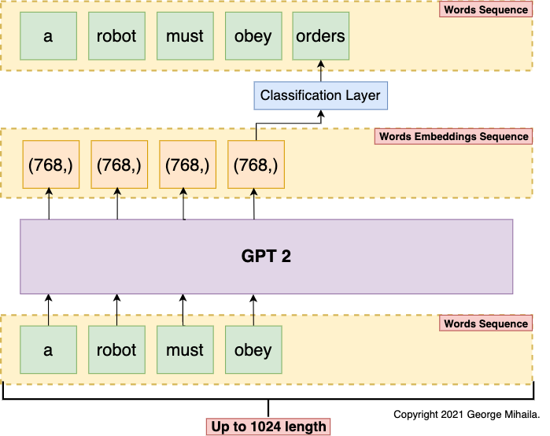
Prediction
- This is how GPT-2 is able to translates text, answers questions, summarizes passages, and generates text output.
- How can we use it for simple text classification?
Classification
- Now we'll use GPT-2 to perform text classification.
Classification
-
Now we'll use GPT-2 to perform text classification.
-
We'll classify a movie review as being either positive or negative sentiment.
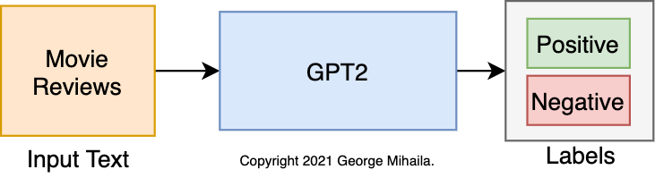
Classification
- Let's look at a positive movie review:
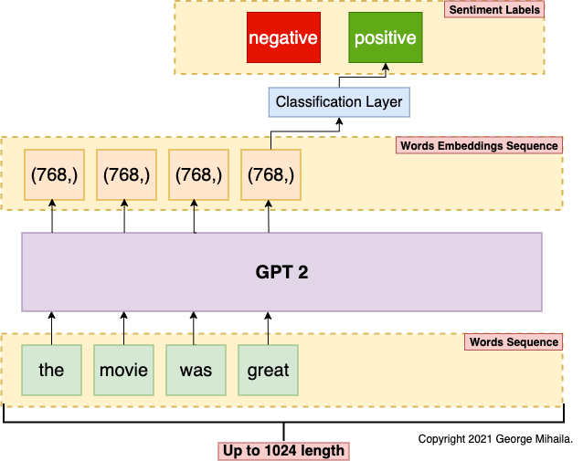
Classification
- Now let's look at a negative movie review:
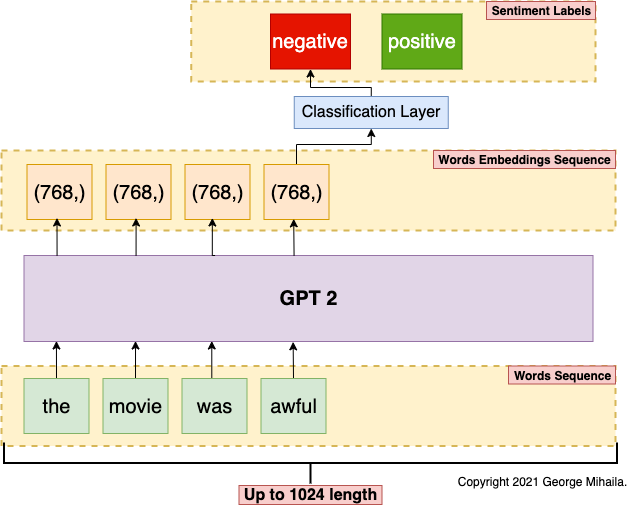
Coding Session
🎱 GPT-2 For Text Classification using Hugging Face 🤗 Transformers
Complete tutorial on how to use GPT-2 for text classification.


-
Disclaimer: The format of this tutorial notebook is very similar to my other tutorial notebooks. This is done intentionally in order to keep readers familiar with my format.
-
This notebook is used to fine-tune GPT-2 model for text classification using Huggingface transformers library on a custom dataset.
Conclusions
- I showed that GPT-2 can be used for text classification.
- Depending on your data and classification task GPT-2 could outperform other transformers models.
- It's always good to have options.
Contact 🎣
Let's stay in touch!
🦊 GitHub: gmihaila
🌐 Website: gmihaila.github.io
👔 LinkedIn: mihailageorge
📓 Medium: @gmihaila
📬 Email: georgemihaila@my.unt.edu.com
👤 Schedule meeting: calendly.com/georgemihaila